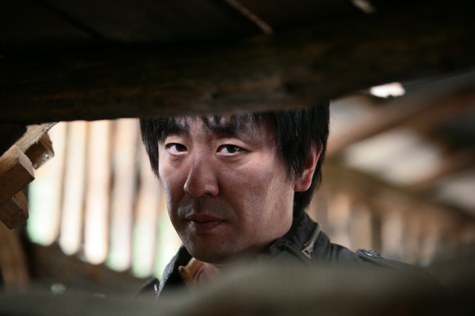

#8581 Mr. & Mrs. Lee
Alternativ: My Girlfriend Is an Agent (Englischer Titel)

 IMDB-Wertung: 6.4 / 10
IMDB-Wertung: 6.4 / 10  Metascore: 0
Metascore: 0 
Ahn Soo-ji ist Geheimagentin im Dienst der koreanischen Regierung. Ihr trotteliger Freund Lee Jae-joon ahnt nichts von Soo-ji’s Tätigkeit, hat von ihren Lügen und Geheimnissen die Nase voll, verlässt sie. und zieht aus der Stadt. Drei Jahre später kommt Jae-joon zurück, er ist Geheimagent und russischen Terroristen auf den Fersen, die Killerviren kaufen und auch einsetzen wollen. Auch Soo-ji ist den Russen auf der Spur und es kommt zu einem Wiedersehen mit Lee. Doch schafft es das ehemalige Paar sich zusammen zu raufen und die russischen Terroristen zu stoppen?
Jahr: 2009
Dauer: 113 Minuten
FSK: 16
Land: Süd-Korea Studio: Splendid FilmTonspuren:
Untertitel: Deutsch,
Auflösung: 1080p (1920x816) Größe: 4710 MB
Genre: Action, Komödie, Liebe
Regisseur: Terra Shin
Drehbuch: Bryce Zabel
Soundtrack: Seung-hyun Choi
Darsteller:
- Ha-neul Kim als Ahn Soo-ji
- Ji-Hwan Kang als Lee Jae-joon
-  Seung-ryong Ryu als Weon-seok
- Elizabeth Sujin Ford als Sonya Victoria
- Young-nam Jang als Team Leader Hong
- Shin-il Kang als Doctor Noh
- Domashchenko Vadym als Victor Bovchav
- Cody Hunter als Michael
- Nam-yeol Jang als Department Chief Jo
- Jeong-seok Kim als Section Chief Oh
- Seung-mok Yoo als Officer Jang
- Hyeong-jong Kim als Sang-bong
- Hyeong-beom Kim als Se-gyun
- Seong-min Park als Samsung Man
- Seung-hun Kim als Inspection Agent
- Sang-hyeok Lee als Overseas Team Agent
- Jin-Soo Park als Overseas Team Agent
- Byeong-hee Yoon als Harimao Team Agent
- Gi-seop Jeong als Industrial Security Team Agent
- Woo-Jeong Oh als Industrial Security Team Agent
- Woo-jin Lee als Park Sang-ho
- Goutsou Iliana als Natasha Valleschkova
- Jonathan Branton als X
- Woo-hyeok Jeong als Police Station Drunk
- Seong-il Cheon als Taxi Driver
Datei: X:\HD-Eastern-Modern(A-M)\Mr. & Mrs. Lee (2009, FSK16, 1920x816).mkv seit 22.03.2018
Festplatte: HD Eastern+Western
 Es gibt insgesamt 104 Filme in der Gruppe 'HD-Eastern-Modern(A-M)'
Es gibt insgesamt 104 Filme in der Gruppe 'HD-Eastern-Modern(A-M)'